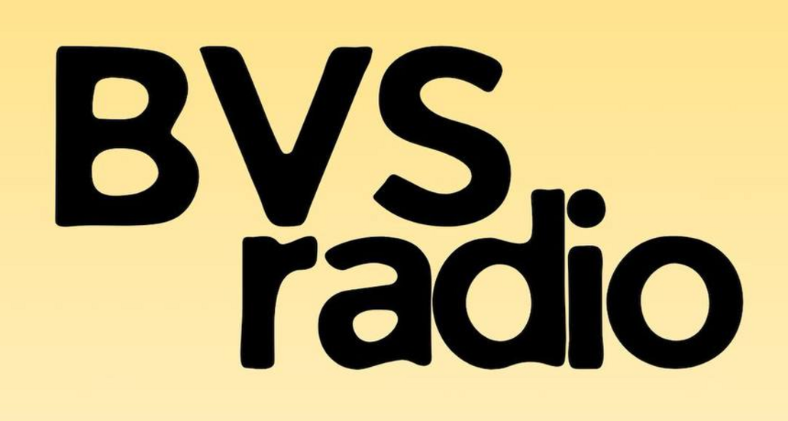

A staged compliance, negotiation and funding strategy for BVS Radio’s internet-only music streaming, artist platform and future premium services.
Decision draft · 28 July 2026Recommended year-one compliance reserve for BAZ, a negotiated ZIMURA arrangement, legal/application review, reporting and contingency.
BVS should treat ZIMURA and BAZ as two separate obligations:
The recommended sequence is: obtain written BAZ classification; secure at least US$5,500; apply for the applicable BAZ licence; negotiate the ZIMURA pilot in parallel; and only then make public claims that BVS is licensed or regulated.
BVS should consistently describe the service as:
BAZ’s current published schedule, under S.I. 103 of 2026 dated 12 June 2026, lists the following fees for a Webcasting / On-Demand Service:
| Fee | Published amount | Planning treatment |
|---|---|---|
| Application / renewal | US$1,000 | Assume payable at application and each renewal until BAZ confirms otherwise. |
| Annual regulatory fee | US$3,450 | Assume payable for the licence year; ask about timing, instalments and proration. |
| Total BAZ provision | US$4,450 | Ring-fence before filing. |
BVS should not assume the Subscription Management Service category applies. The published annual fee for that category starts at US$50,000 and appears materially different from BVS’s internet webcasting model. Classification must come from BAZ in writing.
ZIMURA’s current website describes online streaming as a broadcasting licence category but does not publish a fixed fee. The historical 2020 tariff mentioned US$0.20 per viewer/listener per annum for webcasting; that figure is a negotiation reference only, not a current quote.
| Term | BVS proposal |
|---|---|
| Term | 12-month startup pilot |
| Minimum | US$120 annually |
| Variable royalty | 2% of net revenue directly attributable to licensed music streaming |
| First-year cap | US$300 |
| Reporting | Quarterly usage and revenue report |
| Review thresholds | 5,000 monthly active listeners, 50,000 monthly streams, or US$1,500 monthly streaming revenue |
Relevant revenue should include streaming advertising, streaming sponsorship and listener subscriptions. It should exclude mixing/mastering services, beat sales, artist deposits, unrelated shop sales and other revenue not generated by the licensed music use.
If ZIMURA requires listener-based pricing, BVS’s fallback proposal is US$0.20 per annual unique listener, subject to a US$100 minimum and US$500 first-year cap.
Regulatory authority for the broadcasting/webcasting service, licensing class and operational standards.
Music copyright/blanket repertoire licence for represented compositions and eligible royalty distributions.
Direct permission for master recordings, artwork, metadata, platform streaming, downloads and takedown processes.
Beat licences, downloads, creative services and future distribution require separate terms and accurate rights confirmation.
BVS should request from ZIMURA: the current approved tariff; sample agreement; represented repertoire and territories; reporting format; treatment of direct-licensed works; on-demand treatment; deductions/administration; audit terms; and effective licence date.
| Cost area | Target | High provision |
|---|---|---|
| BAZ application/renewal + annual fee | US$4,450 | US$4,450 |
| ZIMURA pilot | US$120–300 | US$500 |
| Contract/application/legal review | US$300 | US$600 |
| Reporting, filing and contingency | US$480 | US$500 |
| Total reserve | US$5,350 | US$6,050 |
This budget excludes ordinary hosting, payment processing, company/tax formation, marketing, production, staff, and distribution-partner costs.
| Source | Target contribution | Purpose |
|---|---|---|
| Founder/company capital | US$2,500–3,000 | Core regulatory commitment |
| Launch sponsor/advertising partner | US$1,500–2,000 | BAZ and launch compliance |
| Artist Premium pre-sales | US$1,000–1,500 | Platform and reporting reserve |
| Offer | Recommended price | Position |
|---|---|---|
| Founding Premium | US$9/month or US$90/year | Limited to the first 25–50 artists. |
| Standard Premium | US$12/month or US$120/year | Introduced after licensing and partner-cost validation. |
| DSP distribution | Separate / TBD | Do not promise or price until the distributor and actual costs are confirmed. |
BAZ should be treated as company overhead funded across sponsorship, advertising, shop margin, services and subscriptions. It should not appear as a direct per-artist “BAZ licence fee.”